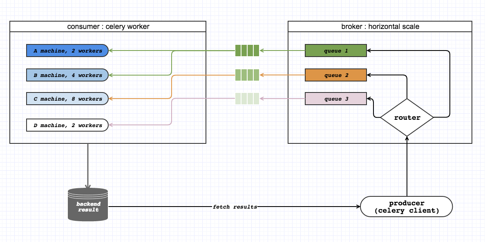
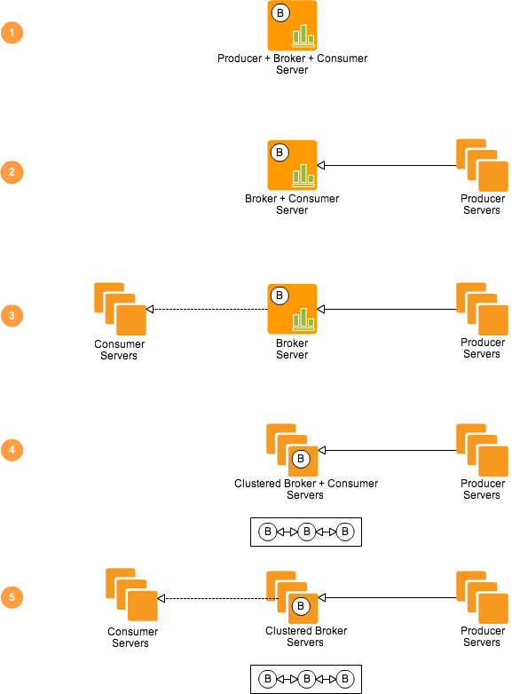

celery 笔记
2015-12-18
1. hello, celery
three questions:
- what is celery?
- why do we need celery?
- what features does celery have?
1.1 what is celery?
First, celery is a distributed task queue [ a distributed system to process messages].Second, it provides operations with the tools required to maintain such a system.Third, it was built for Dijango Apps in the early, but scaled since version 0.8.Fourth, it focus on real-time processing, while also supporting task scheduling.
1.2 why do we need celery?
- run something in the background.
- run something after the web request is done.
- making something is done by executing it asynchronously and using retries.
- schedule periodic task.
- distributed computing.
- parallel executing.
1.3 what features does celery have?
simple: write in python, easily configure.high available: retry mechanism, independent broker HA.fast: process millions of tasks one minute.flexible: Almost every part of Celery can be extended or used on its own, Custom pool implementations, serializers, compression schemes, logging, schedulers, consumers, producers, autoscalers, broker transports and much more.monitoring: A stream of monitoring events is emitted by workers and is used by built-in and external tools to tell you what your cluster is doing – in real-time.auto reloading: In development workers can be configured to automatically reload source code as it changes.workflows: Simple and complex workflows can be composed using a set of powerful primitives we call the “canvas”, including grouping, chaining, chunking and more.auto scaling: Dynamically resizing the worker pool depending on load, or custom metrics specified by the user, used to limit memory usage in shared hosting/cloud environments or to enforce a given quality of service.Time & Rate Limits: You can control how many tasks can be executed per second/minute/hour, or how long a task can be allowed to run, and this can be set as a default, for a specific worker or individually for each task type.Scheduling: You can specify the time to run a task in seconds or a datetime, or or you can use periodic tasks for recurring events based on a simple interval, or crontab expressions supporting minute, hour, day of week, day of month, and month of year.Resource leak protection:User components:
2 how does celery work?
2.1 some terms in message queue and celery
celery task: a serialized task info which will be scheduled to done by celery, generally it contains some meta data, like bellow:
{"id": "4cc7438e-afd4-4f8f-a2f3-f46567e7ca77",
"task": "celery.task.PingTask",
"args": [],
"kwargs": {},
"retries": 0,
"eta": "2009-11-17T12:30:56.527191"
}producer: the one who send task messages to the broker, generally it is a celery client.consumer: fetch task messages from queues and process them.broker: the one who receives task messages from producer and route different messages to different queues.exchange: exchange, or a router, the one who really do message receiving from producer and dispatching message to queues. two things should be taken in mind about exchange:- one message from producer can be routed to zero or more queues;
- you can set route rules for the exchange, called bindings;
queue: buffer for store task messages.
2.2 the celery workflow

2.3 the workflow deployment

3. install celery
two possible ways to install celery.
- install the latest stable celery and its dependences
chenshan@mac007:~/Desktop$sudo pip install -U celery
...
...
...
Installing collected packages: celery, kombu, billiard, amqpthe celery dependences info is listed here: Does Celery have many dependencies
- install celery with bundles
Celery also defines a group of bundles that can be used to install Celery and the dependencies for a given feature.
You can specify these in your requirements or on the pip comand-line by using brackets. Multiple bundles can be specified by separating them by commas. for example, using the command pip install "celery[librabbitmq,redis,auth,msgpack]" to install celery with librabbitmq, redis, auth, msgpack libriaries.
all bundles command can be find here: bundles
参考文档
- celery official site
- http://abhishek-tiwari.com/post/amqp-rabbitmq-and-celery-a-visual-guide-for-dummies
- Async Celery by Example: Why and How
- How Instagram Feeds Work: Celery and RabbitMQ
- stackoverflow: Celery parallel distributed task with multiprocessing
- [Scaling Celery] Sending Tasks To Remote Machines!
- Celery Messaging at Scale at Instagram
- CELERY - BEST PRACTICES
- CELERY - BEST PRACTICES slide
- CELERY - BEST PRACTICES 中文
- 从一次celery踩坑中谈谈Queryset的懒加载
- stackoverflow: Send log messages from all celery tasks to a single file